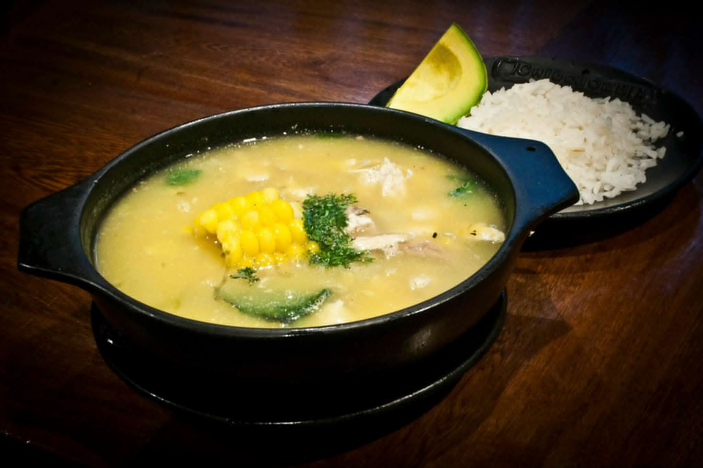
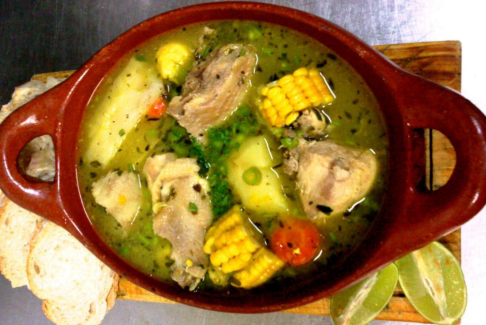

Ajiaco Santafereño
El ajiaco criollo se prepara con carne de res, gallina, cerdo, tasajo y un hueso de jamón o lacón a la que se le agrega maíz, calabaza, malanga blanca, malanga amarilla, ñame, plátanos verdes y maduros, yuca y boniato. Se aliña con ají, cebolla, ajo, comino, sal y limón. Una tradición oral cuenta que este caldo se confecciona en los barrios cubanos la noche del 24 de junio para comenzar las fiestas de San Juan. Se cree que la tradición nació en la plaza de "El Carmen", Camagüey, cuando los vecinos, mayormente pobres, no tenían suficiente para una comida, se reunían aportando lo que cada cual podía, posiblemente sobras de la cena de la noche anterior, de allí la variedad de ingredientes.
Sancocho
El sancocho es una sopa hecha con carnes, tubérculos, verduras y condimentos. Entre sus orígenes parecen estar el ajiaco taíno, el cocido español, la olla podrida española, y los estofados corso, irlandés, danés, alemán, italiano y francés.
Comentarios
-

Carolina Leandro
hace 40 minutosEste sancocho es super delicioso, ojala hubiera un sitio donde lo vendieran como el sancho valluno... :(.-

Andres Perez
hace 35 minutosCaro, en el Salto del Ángel lo venden muy parecido, no es igual por que el valluno es unico, pero muy parecido, muy comodo y buena atencion en este restaurante. -
Carolina Leandro
hace 29 minutosUyyy, en serio?, gracias por tu recomendacion.
-
-
Abel Maecha
hace 1 horaEl sancocho super rico en el Salto del Ángel, recomendadisimo.
Comentarios
Andres Perez
hace 18 minutosCarolina Leandro
hace 12 minutosAndres Perez
hace 9 minutosAdriana Moreno
hace 22 minutos